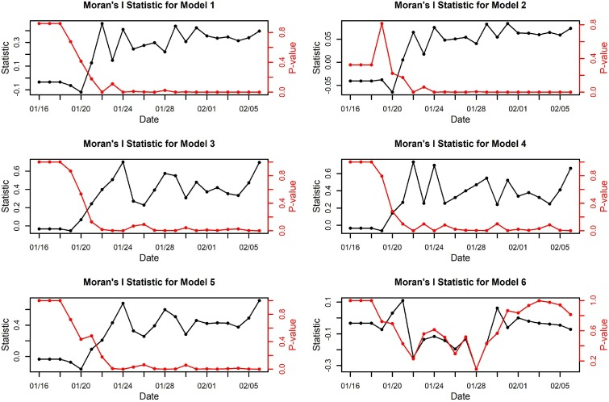
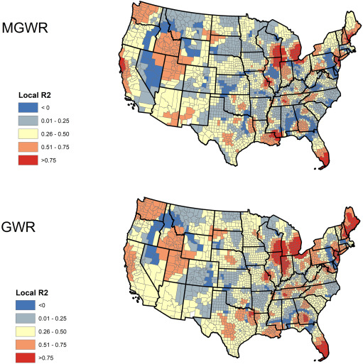

7 Week8 Classification2
7.1 Summary
7.1.1 Mind Map
This is the mind map for Lecture 8. This week’s lecture introduced advanced techniques in remote sensing for land cover classification.
Figure: Mind map for Lecture 8
7.1.2 Tools for managing spatial autocorrelation
I would like to add more information about spatial autocorrelation, cause When training and testing classification models in remote sensing, it is crucial to consider spatial autocorrelation.
Spatial autocorrelation refers to the principle that spatial data points close to each other are more likely to have similar values than those that are further apart. Ignoring spatial autocorrelation can lead to overly optimistic accuracy assessments and model overfitting.
Object-Based Image Analysis (OBIA) can help address spatial autocorrelation because it groups nearby pixels into objects or segments based on their spectral and spatial properties. This method recognizes that adjacent pixels are likely to be more related and thus analyzes the image at the object level rather than at the individual pixel level. By doing so, it inherently accounts for the spatial context and can reduce the bias in accuracy assessment caused by spatial autocorrelation.
Spatial cross-validation is specifically designed to handle spatial autocorrelation when assessing model performance. Unlike traditional cross-validation, which randomly splits the dataset into training and testing sets, spatial cross-validation ensures that spatially autocorrelated observations are not split across training and testing sets. It partitions the data based on spatial location, typically ensuring that the folds are spatially disjoint. This means that each fold acts as a truly independent sample of the data, providing a more reliable estimate of the model’s performance on unseen data.
In summary, both OBIA and spatial cross-validation are useful approaches for managing spatial autocorrelation, leading to more robust and reliable classification models in remote sensing.
7.2 Applications
In the respective studies on the spatial distribution of COVID-19, both (Kang et al. 2020) and (Mollalo, Vahedi, and Rivera 2020) shed light on the significance of spatial autocorrelation in epidemiological research.
Kang et al. applied Moran’s I statistic to determine the spatial clustering of COVID-19 cases in China, adjusting for skewness in the data by employing log transformation. This method revealed significant spatial dependencies, with different models capturing the extent of disease spread based on geographic proximity, population density, and healthcare resources. Notably, their study suggested that areas geographically closer to Wuhan showed early signs of COVID-19 clusters before travel restrictions were implemented.

Figure: Plots of Moran’s I statistic and p-values
Source: (Kang et al. 2020)
Conversely, Mollalo et al. delved into the spatial variability of COVID-19 incidence across the United States using a geodatabase of various factors. Their method employed spatial lag and spatial error models, as well as geographically weighted regression (GWR) and multiscale GWR (MGWR), to account for spatial non-stationarity. MGWR, in particular, demonstrated higher explanatory power for disease variability, indicating a strong spatial relationship influenced by factors such as income inequality and healthcare provision.

Figure: Geographic distribution of local R2 of GWR and MGWR models for COVID-19 incidence rate associated with income inequality, median household income, % of nurse practitioners, and % of black females across the continental United States.
Source: (Mollalo, Vahedi, and Rivera 2020)
Both studies underscore the importance of considering spatial autocorrelation to understand the spread of COVID-19. The Chinese study primarily utilized proximity and direct relationships in defining spatial adjacency, whereas the U.S. study integrated a broader spectrum of socioeconomic and environmental variables, showcasing the disease’s complexity and the multifaceted nature of its spread. These approaches highlight the necessity of incorporating spatial dynamics into epidemiological models to accurately capture the influence of various factors on disease transmission.
7.3 Reflections
In comparison to last week, this week’s lecture has provided a more profound insight into how to effectively model and interpret environmental data.
It has introduced us the concept of accuracy assessment, which has profoundly enhanced my understanding of it, especially following up on last week’s comparative study of SVM and ML classifiers by doing the accuracy assessment. I’m really excited. It allowed me to revisit last week’s literature with a deeper perspective, understanding not just the ‘what’ but the ‘why’ behind the performance metrics.
Furthermore, while I was introduced to the concept of spatial autocorrelation in my CASA0005 course, this module has deepened my comprehension of its significance in the realm of geographical data. Recognizing the interdependence of spatial data points is crucial for the credibility of classification processes in remote sensing. Overlooking the spatial linkages could skew the results, which underlines the fact that our data is not just a collection of isolated points but a mirror of the interconnected world we inhabit. It serves as a powerful reminder that, in working with this data, we must always account for the intricate web of relationships that define the environment around us.
7.4 References
Kang, Dayun, Hyunho Choi, Jong-Hun Kim, and Jungsoon Choi. 2020. “Spatial Epidemic Dynamics of the COVID-19 Outbreak in China.” International Journal of Infectious Diseases 94: 96–102.
Mollalo, Abolfazl, Behzad Vahedi, and Kiara M Rivera. 2020. “GIS-Based Spatial Modeling of COVID-19 Incidence Rate in the Continental United States.” Science of the Total Environment 728: 138884.